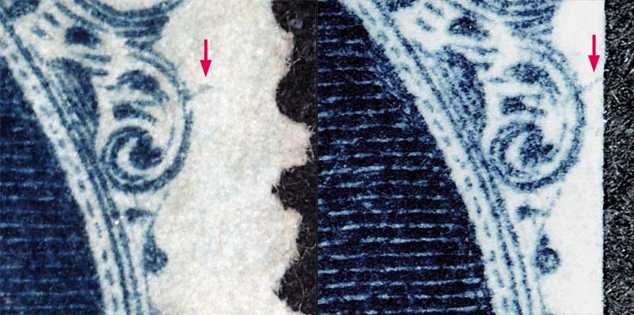
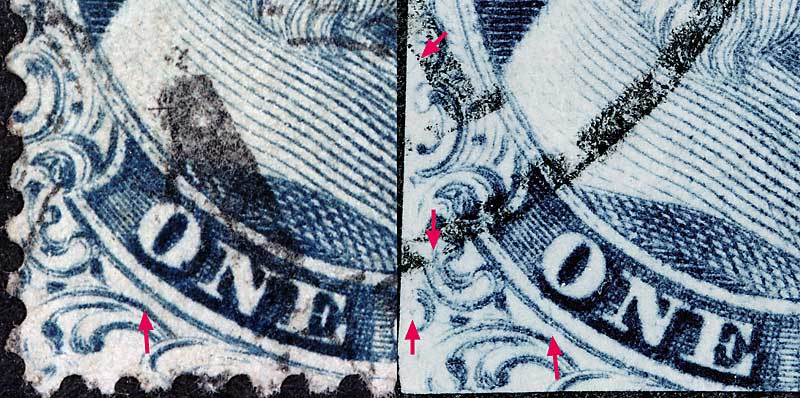

1¢ Franklin Issue of 1851-1857, PLATE 4
Position 79R4
Type IIIa, Relief D
Issued both imperforate and perforate.
Plate 4 changed it's appearance as many plating marks faded away due to plate wear, and new plating marks developed over the life of the plate. One of the most annoying aspects of trying to identify Plate 4 positions is the appearance and disappearance of these plating marks.
PLATING NOTES: There is a faint vertical line of color west of Ornament D. A faint horizontal blur line can barely be seen protruding from the top of Ornament T. A small diagonal line of color protruding from the lower part of Ornament E (See Fig.2). Lastly, a faint diagonal line of color protrudes from Ornament K. Many plating marks are not shown on the Neinken plating diagrams but have been confirmed as consistent.
FIGURE 1, (Below)
Courtesy of Jim Baughman

FIGURE 2, (Below)
Courtesy of Lixiong Li

Figure 2. (BELOW) Small diagonal line of color protruding from the lower part of Ornament E and other plating marks of interest. These marks are not shown on the Neinken plating diagrams.

Figure 3. (BELOW) Small diagonal line of color protruding from Ornament Q and a strong DOT inside and below Ornament P. These marks are not shown on the Neinken plating diagrams.

Thanks for visiting this site. I hope you learn something new as we are making new discoveries all the time. You, the visitor, have my permission to link to my pages and to share the INFORMATION with others. The images themselves fall under the fair use guidelines established by the United States Congress and Copyright law. Basically contact us before using. I also ask in return that you send me an e-mail if I have made a mistake, or have made some other technical blunder that in my rush to put these pages up would cause the visitor confusion. Please also visit my other website at www.slingshotvenus.com. and support the live music arts. While your there, be sure to purchase our music. There are not many philatelic rock stars around and we need all the help we can get. :-)
I can be reached at: nerdman@ix.netcom.com
Copyright © 2001-2016 Richard Doporto, Sonic Imagery Labs
REVISED 1.15.2016